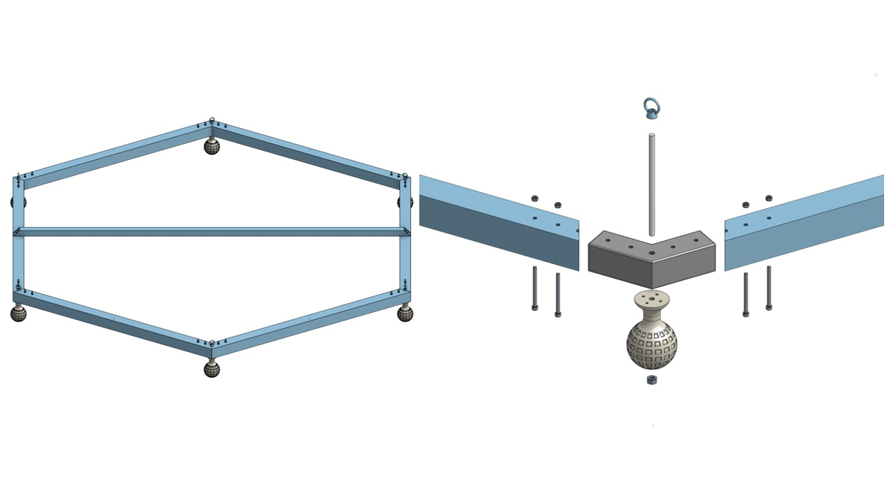
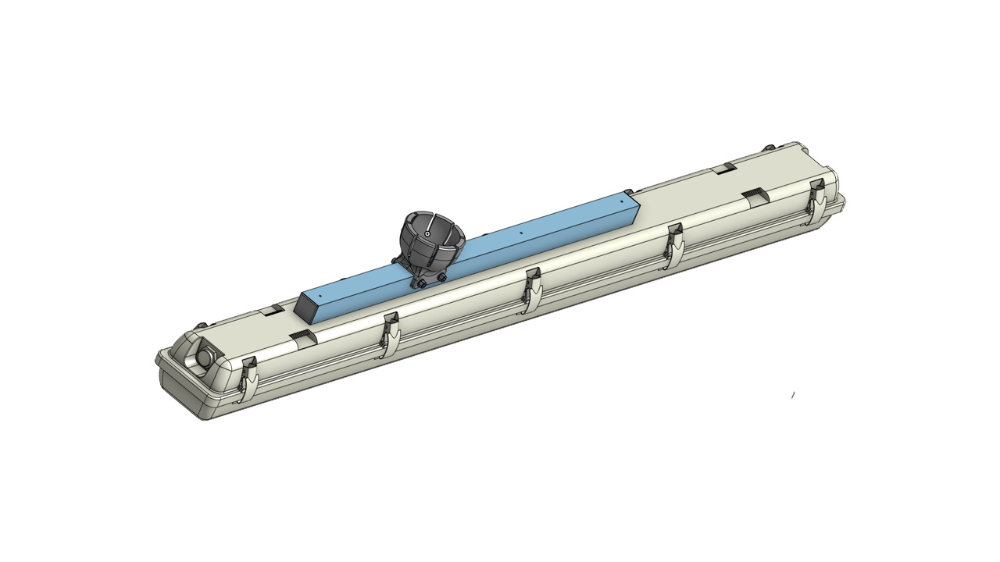
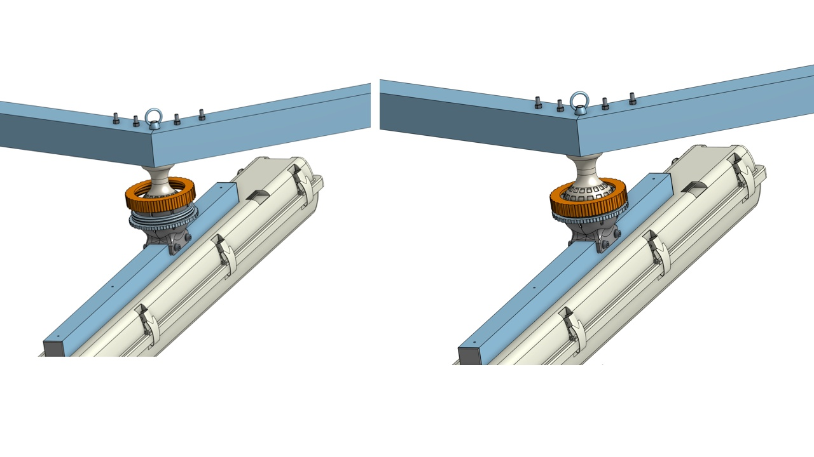
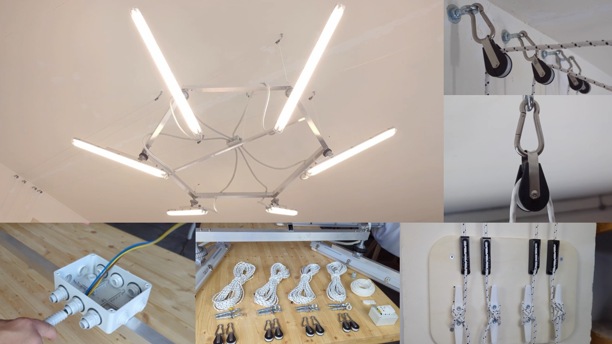

This guide covers the assembly of the SixLight lamp structure only.
This is a short illustrated guide to the SixLight lamp structure only. Electrical wiring and the ceiling pulley system are not described here but referenced in the final images.
| Part number | Quantity | Description |
|---|---|---|
| 001 | 6 | 50x50x1000mm Alluminium profile 2mm thickness |
| 002 | 6 | 3d printed frame joint |
| 003 | 6 | 3d printed sphere |
| 004 | 6 | M8 x 165mm threaded bar |
| 005 | 24 | Hex socket head cap screw M5x0.80 x 65 Stainless Steel |
| 006 | 6 | Self-locking hex nut M8 Stainless Steel |
| 007 | 24 | Hex nut M5 Stainless Steel |
| 008 | 6 | M8 eyebolt |
| 009 | 6 | Assembly of LED fixtures (cad reference) |
| 010 | 12 | 3d printed Caps |
| 011 | 6 | Industrial 120cm LED batten housing |
| 012 | 6 | 30x30x640mm Alluminium profile 2mm thickness |
| 013 | 12 | Symmetrical half ball socket |
| 014 | 6 | Female threaded fixing ring |
| 015 | 6 | Male threaded fixing ring |
| 016 | 24 | M5 Stainless Steel washer |
| 017 | 12 | Hex nut M5 Stainless Steel |
| 018 | 12 | Hex socket head cap screw M5 x 50 Stainless Steel |
| 019 | 1 | 30x30x1818mm Alluminium profile 2mm thickness |
| 020 | 24 | Aluminium rivet Ø 3 mm × 10 mm |
| 021 | 2 | Aluminium rivet Ø 5 mm × 10 mm |
All parts were printed using a Bambu Lab X1 Carbon with a 0.6 mm nozzle and basic PLA without any supports.
All components, except for the spherical joint, are printed with 100% infill for maximum strength.
The sphere is printed with: - 5 perimeters - 6 bottom layers - 6 top layers - 30% infill
Since the joint relies on precise fit, it is recommended to print one piece first and test the assembly.
If the fit is too tight or too loose, adjust the slicer's external dimension parameters slightly until the desired tolerance is achieved.
!IMPORTANT - To ensure smooth threading and avoid jamming on the layer ridges of the printed part, components 013 (spherical jaw halves) and 015 (male threaded fixing ring) should be sanded with fine-grit sandpaper.
The SixLight frame is composed of six 50x50 mm aluminum tubes arranged in a hexagon.
At each corner, a 3D printed spherical housing is mounted.
Using carbon fiber tubes instead of aluminum can reduce the total frame weight by over 3 kg, while maintaining similar dimensions.

Apply threadlocker to the M8 eyebolt (part 008) and the M8 self-locking nut (part 006) during assembly to ensure long-term stability.
Each LED batten is mounted on a reinforced aluminum tube (30x30 mm), riveted for strength.
At each end of the reinforcement bar, two spherical mount halves are fixed to form a housing for the ball joint.

Each sphere fits into a set of two spherical jaws that cradle it securely.
These are held together with a threaded clamping ring.

Once tightened, the lamp remains in the selected position.
The joint allows for a full 360° rotation and ±30° tilt.

This version was fixed to the ceiling using a commercial pulley and cable system.
The electrical connection is made via standard 220V AC cabling (see local regulations).
This guide is provided as is, without warranty.
Always ensure proper mechanical and electrical safety during construction and use.